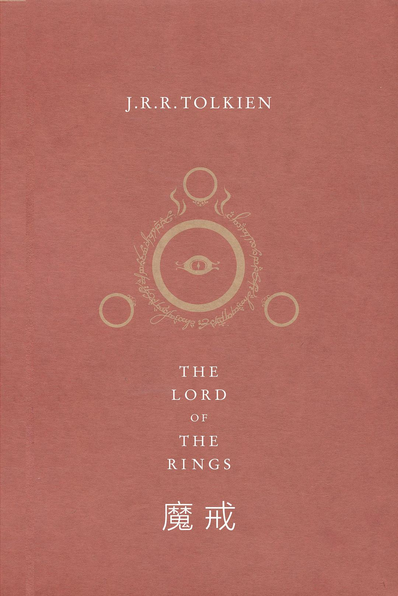

魔戒

作者:
J.R.R.托尔金
出版社: 上海人民出版社
出品方: 世纪文景
出版年:2013-9
页数: 1500
装帧: 平装
丛书: 托尔金在文景
ISBN: 9787208113039
内容简介 · · · · · ·
至尊魔戒，拥有统御众戒、奴役世界的力量，黑暗魔君索隆苦觅已久。为了守护家园，魔戒继承人弗罗多毅然离开宁谧淳朴的夏尔，踏上前途未卜的旅途。与他同行的是睿智的巫师、勇敢的人类、美善的精灵、坚毅的矮人和热爱和平的霍比特人。征途见证了勇气与友谊。跃马客栈里的重重暗影，卡扎督姆桥的怒吼炎魔，勇猛骁勇的洛汗骠骑，范贡森林的上古树须，凄厉嘶嚎的邪恶戒灵，陡峭山壁旁的巨型毒蛛……每个人各自抵御着无尽的诱惑与磨难，承担起属于自己的善恶考验。
平凡的霍比特人战栗在末日烈焰面前，他能战胜这噬灭灵魂的至尊魔戒吗？ 全书共三部：《魔戒同盟》《双塔殊途》《王者归来》。
作者简介 · · · · · ·
J.R.R. 托尔金（J.R.R. Tolkien） 英国文豪，天才的语言学家，生于1892年1月3日，1925年开始担任牛津大学教授。他创作了一系列脍炙人口的中洲世界史诗，影响最为深远的是《霍比特人》和《魔戒》。这两部巨作被誉为当代奇幻作品的鼻祖。1972年3 月28日，托尔金获英国女王伊丽莎白二世颁发的大英帝国指挥官勋章。 托尔金于1973年9月2日在牛津逝世。托尔金死后，其作品声名未减，至今全球已畅销2.5亿余册，《魔戒》在英国Waterstones书店和第四频道合办的票选活动中被选为20世纪之书，被亚马逊网络书店票选为两千年以来最重要的书。